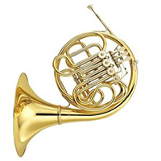

是由木管樂器（woodwind）、銅管樂器（brass）以及打擊樂器（percussion）所組成。 它多變的曲目包括原創的管樂曲、改編的古典音樂、輕音樂、以及流行音樂。 雖然管樂團跟行進樂隊（Marching Band）所使用的樂器很接近，但是管樂團的主要目的是管樂合奏。
長笛是現代管弦樂和室內樂中主要的高音旋律樂器，外型是一根開有數個音孔的圓柱型長管。 長笛是現代已知的樂器家族中最古老的成員之一 「笛」這種稱呼被古人用來統稱其他所有的管型樂器

法國號或稱圓號，是一種中音銅管樂器 法國號的吹法基本上與其它同類的銅管樂器類似 法國號具有雙調性 也是音域最廣的管樂器之一
定音鼓 是一種膜鳴樂器，由古代戰爭時的戰鼓所演變出來的變種樂器。
在巴洛克時代後期開始在樂隊中使用，古典時期起已成為了常規化的樂器，
亦成為了整個交響樂團中的一個重要樂器。
| 中英文品名： | halla malmo可拆式不沾鍋四件組 | |
|---|---|---|
| 材質： | 鋁合金不沾塗層 | |
| 尺寸： | 炒鍋:28X9cm、煎鍋:26X5cm 湯鍋:20X9cm | |
| 內容物： | 炒鍋X1、煎鍋X1、湯鍋X1、可拆式把手X1 | |
| 產地： | 中國 | |
使用時請留意：